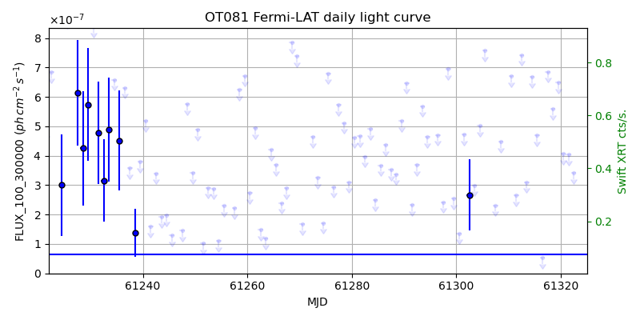
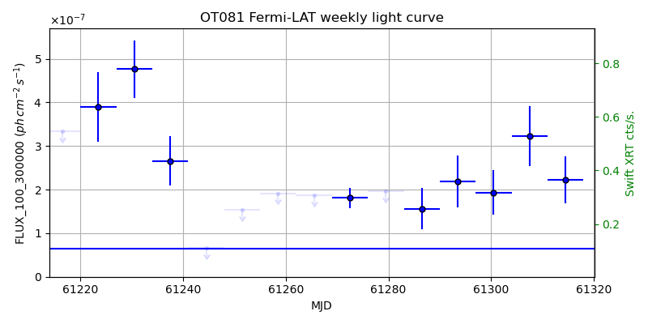
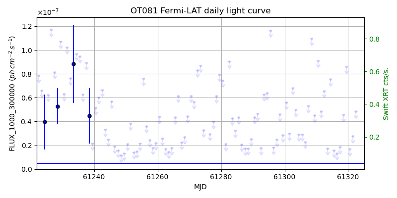
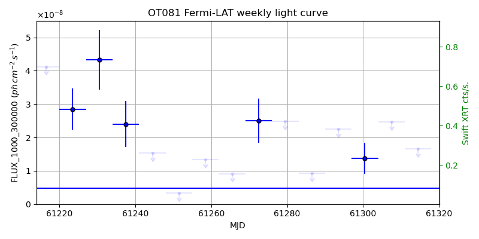

LAT Lightcurve site: https://fermi.gsfc.nasa.gov/ssc/data/access/lat/msl_lc/source/OT_081
Swift site: https://www.swift.psu.edu/monitoring/source.php?source=OT081
NED: Query
Time of last update of this page: UT: 2026-10-10 15:25 (MJD: 61323.643)
| Property | Value |
|---|---|
| R.A. | 17:51:32.88 |
| Dec. | 9:39:00.0 |
| z | 0.322 |
| 3FGL SpectrumType | LogParabola |
| 3FGL PL Index | |
| 3FGL Flux_100_300000 | 6.46e-08 1 / (s cm2) |
| 3FGL Flux_1000_300000 | 4.83e-09 1 / (s cm2) |
| 3FGL Flux >200 GeV | 1.07e-12 1 / (s cm2) |
| 3FGL Extrap. Crab >200 GeV | 0.00 |
| 3FGL Flux After EBL Absorption >200GeV | 4.02e-13 1 / (s cm2) |
| 3FGL EBL Crab Fraction >200GeV | 0.00 |

| MJD | dMJD | Flux | dFlux | Frac3FGL | FracCrab>200GeV | EBLFracCrab>200GeV |
|---|---|---|---|---|---|---|
| 61318.50 | 0.50 | 5.59e-07 | 0.00e+00 | 0.00 | 0.00 | 0.00 |
| 61319.50 | 0.50 | 6.49e-07 | 0.00e+00 | 0.00 | 0.00 | 0.00 |
| 61320.50 | 0.50 | 4.07e-07 | 0.00e+00 | 0.00 | 0.00 | 0.00 |
| 61321.50 | 0.50 | 4.04e-07 | 0.00e+00 | 0.00 | 0.00 | 0.00 |
| 61322.50 | 0.50 | 3.42e-07 | 0.00e+00 | 0.00 | 0.00 | 0.00 |

| MJD | dMJD | Flux | dFlux | Frac3FGL | FracCrab>200GeV | EBLFracCrab>200GeV |
|---|---|---|---|---|---|---|
| 61286.50 | 3.50 | 1.56e-07 | 4.71e-08 | 2.42 | 0.01 | 0.00 |
| 61293.50 | 3.50 | 2.19e-07 | 5.89e-08 | 3.39 | 0.02 | 0.01 |
| 61300.50 | 3.50 | 1.93e-07 | 5.07e-08 | 2.99 | 0.01 | 0.00 |
| 61307.50 | 3.50 | 3.23e-07 | 6.93e-08 | 4.99 | 0.02 | 0.01 |
| 61314.50 | 3.50 | 2.22e-07 | 5.41e-08 | 3.43 | 0.02 | 0.01 |

| MJD | dMJD | Flux | dFlux | Frac3FGL | FracCrab>200GeV | EBLFracCrab>200GeV |
|---|---|---|---|---|---|---|
| 61318.50 | 0.50 | 4.56e-08 | 0.00e+00 | 0.00 | 0.00 | 0.00 |
| 61319.50 | 0.50 | 8.58e-08 | 0.00e+00 | 0.00 | 0.00 | 0.00 |
| 61320.50 | 0.50 | 1.68e-08 | 0.00e+00 | 0.00 | 0.00 | 0.00 |
| 61321.50 | 0.50 | 2.78e-08 | 0.00e+00 | 0.00 | 0.00 | 0.00 |
| 61322.50 | 0.50 | 4.83e-08 | 0.00e+00 | 0.00 | 0.00 | 0.00 |

| MJD | dMJD | Flux | dFlux | Frac3FGL | FracCrab>200GeV | EBLFracCrab>200GeV |
|---|---|---|---|---|---|---|
| 61286.50 | 3.50 | 9.19e-09 | 0.00e+00 | 0.00 | 0.00 | 0.00 |
| 61293.50 | 3.50 | 2.25e-08 | 0.00e+00 | 0.00 | 0.00 | 0.00 |
| 61300.50 | 3.50 | 1.37e-08 | 4.66e-09 | 2.84 | 0.01 | 0.00 |
| 61307.50 | 3.50 | 2.47e-08 | 0.00e+00 | 0.00 | 0.00 | 0.00 |
| 61314.50 | 3.50 | 1.66e-08 | 0.00e+00 | 0.00 | 0.00 | 0.00 |
--------------------------------------------------------- Using user-supplied coords: 17:51:32.88 9:39:00.0 2000 --------------------------------------------------------- FLWO UT night of: 2026-10-11 Local Sid. @ Midnight: 00:55 Sunset (-15.0) (local, UT): 19:04 02:04 Sunrise (-15.0) (local, UT): 05:18 12:18 Moonrise (local, UT): Moonset (local, UT): Moon phase: 0.01 --------------------------------------------------------- AzTime LSID UT Obj_el Obj_az Mn_el Mn_az Sep. --------------------------------------------------------- 19:04 19:58 02:04 53.4 239.9 -16.1 264.2 72.6 19:34 20:29 02:34 47.7 247.3 -22.3 267.8 72.3 20:04 20:59 03:04 41.7 253.4 -28.5 271.5 72.1 20:34 21:29 03:34 35.5 258.6 -34.7 275.4 71.8 21:04 21:59 04:04 29.2 263.2 -40.8 279.7 71.6 21:34 22:29 04:34 22.8 267.4 -46.8 284.6 71.3 22:04 22:59 05:04 16.4 271.4 -52.7 290.5 71.0 22:34 23:29 05:34 10.0 275.2 -58.4 297.7 70.7 23:04 23:59 06:04 3.8 279.1 -63.6 307.3 70.4 23:34 00:29 06:34 -1.6 283.1 -68.1 320.3 70.1 00:04 00:59 07:04 -8.8 287.2 -71.3 338.2 69.8 00:34 01:29 07:34 -14.9 291.6 -72.6 0.4 69.5 01:04 01:59 08:04 -20.7 296.4 -71.5 22.7 69.2 01:34 02:30 08:34 -26.3 301.7 -68.3 40.8 68.9 02:04 03:00 09:04 -31.6 307.6 -63.9 54.1 68.6 02:34 03:30 09:34 -36.4 314.4 -58.7 63.8 68.4 03:04 04:00 10:04 -40.7 322.2 -53.1 71.2 68.1 03:34 04:30 10:34 -44.2 331.0 -47.3 77.2 67.8 04:04 05:00 11:04 -46.8 341.0 -41.4 82.2 67.6 04:34 05:30 11:34 -48.3 351.7 -35.3 86.6 67.3 05:04 06:00 12:04 -48.6 2.9 -29.2 90.6 67.1 05:18 06:14 12:18 -48.4 7.9 -26.5 92.4 67.0 --------------------------------------------------------- Dark hours >55 deg.: 0.00